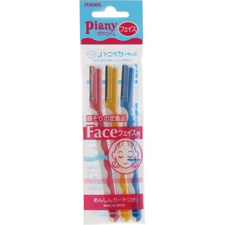
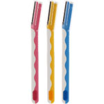

返回列表
产品名称：ピアニィ Ｌ フェイス用 ガード付

フェザー安全剃刀 ピアニィ Ｌ フェイス用 ガード付 ３Ｐ
メーカー フェザー安全剃刀
JANコード 4902470370309
商品の特徴
顔そりの定番品
あんしんガードつき
- 成分・分量
- ＜品質表示＞
○樹脂部：ABS樹脂、キャップはPS製、エラストマー樹脂
○刃部：ステンレス刃物鋼（刃厚0.15mm）、プラチナ合金・樹脂のWコーティング加工、ガードはステンレス製
- 用法及び用量
- ＜使用方法＞
●そる前には必ずクリームや石鹸をのばしてからお肌に軽くあて、なでるようにしてそってください。（横には引かないでください）